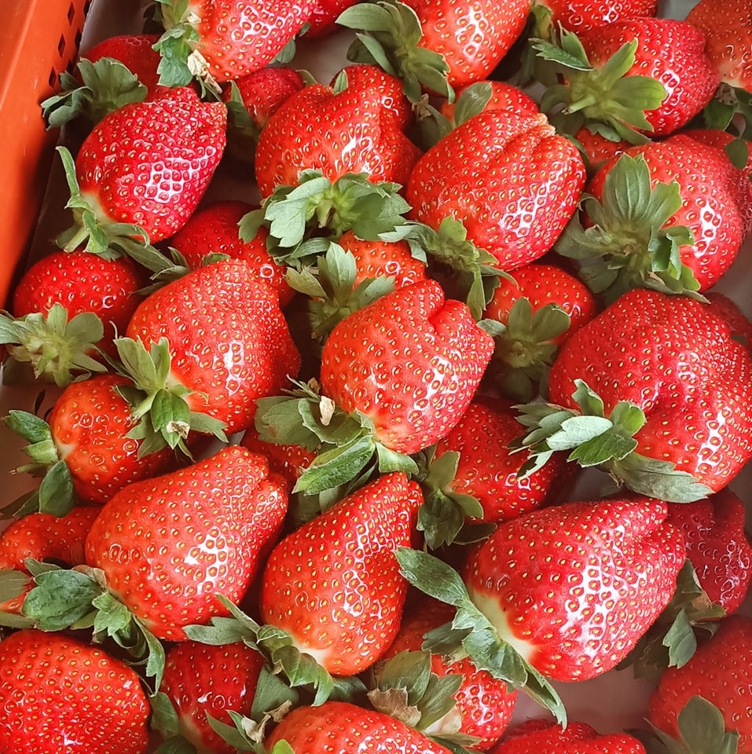

草莓品種

豐香草莓
豐香草莓的形狀呈類似金字塔的圓錐形，顆粒碩大，甚至可以長到手掌大小。果皮呈亮紅色。果肉中心是白色的。培育過程中難標準化，容易產生不均勻變形，因肉質柔軟多汁而容易碰傷或受蟲蛀損壞。
香水草莓
香水草莓的形狀呈圓錐形狀，具有長寬比大致相同的圓弧度，果實相較於豐香草莓較小巧。果皮是更有光澤的鮮紅色。果肉呈現由表皮至核心，白色至粉紅色帶有漸層的色澤。較好栽植，不易損傷，但非常怕下雨，雨水豐厚時，就會讓香水草莓的甜度降低。。
戀香草莓
台灣研發的新品種草莓。直立植株，相較於「豐香」更好栽種，植株不易弱化，繁殖倍率為「豐香」的1.4倍，果實平均20公克，呈現卵型，較「豐香」平均15公克大。